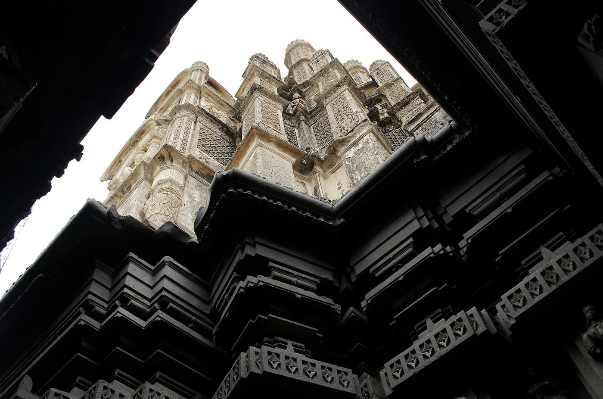

Hemadpanthi · Yavat, Pune District
Bhuleswar
Temple
The Hilltop Fortress of Shiva, Where Stone Speaks of Eternity
- Constructed
- 12th–13th CMedieval period CE
- Style
- HemadpanthiStone interlocking
- Primary Deity
- BhuleshwarForm of Shiva
- Location
- YavatPune District, MH
History & Origins
Perched dramatically on a hilltop near Yavat in Pune district, the Bhuleswar Temple is one of the most impressive examples of Hemadpanthi architecture in Maharashtra. The temple is dedicated to Bhuleshwar — the Lord of the Earth — a rare and significant form of Shiva.
Built during the 12th–13th centuries CE, the temple was constructed using the distinctive Hemadpanthi method attributed to Hemadri, the able prime minister of the Yadava dynasty. This technique uses precisely cut black basalt stones interlocked without mortar, a testament to extraordinary engineering precision.
"The Hemadpanthi method is a masterclass in structural engineering — stones so perfectly fitted that not even a blade of grass can be inserted between them."
Architectural Features
The temple complex is enclosed within a massive fortified wall, giving it the appearance of a hilltop fort. The main shrine features a tall shikhara (tower) of the Nagara style, decorated with intricate carvings of deities, apsaras (celestial dancers), vyalas (mythical creatures), and floral motifs.
The outer walls are adorned with a continuous frieze of carvings that include processions of elephants at the base (symbolising earth and stability), followed by horses, scrolling foliage, scenes from the epics, and finally the divine figures in the upper registers — a vertical cosmogram ascending from earth to heaven.
IKS Connections
The temple's orientation and iconographic programme follow the Shaiva Agamas precisely. The Vastu Purusha Mandala governs the ground plan, while the sculptural programme encodes the Shaiva cosmological framework — the progression of tattvas (cosmic principles) from gross matter to pure consciousness.
Notably, the temple was also a centre for the Natha Panth tradition, with carvings showing Natha yogis in meditation postures — a living connection between the temple institution and the embodied knowledge practices of yogic lineages.
